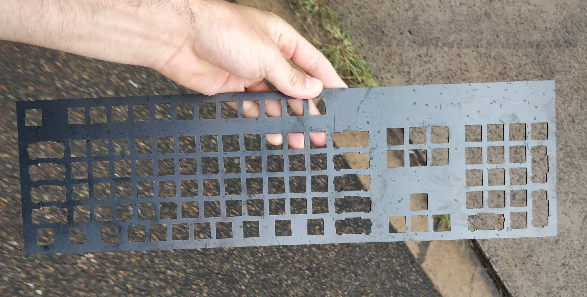
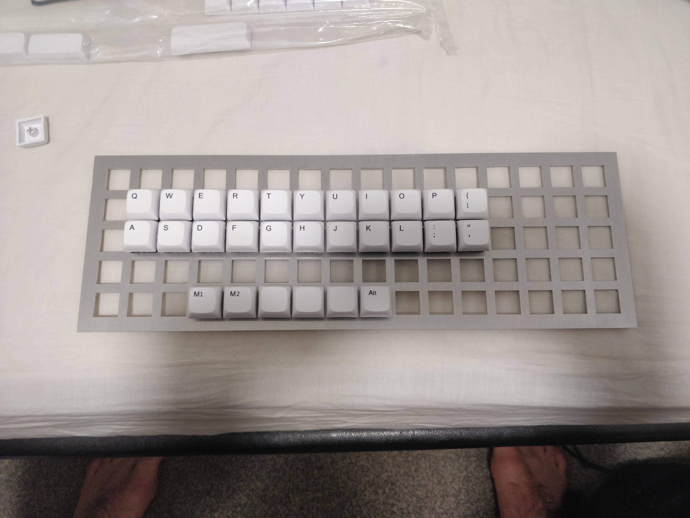
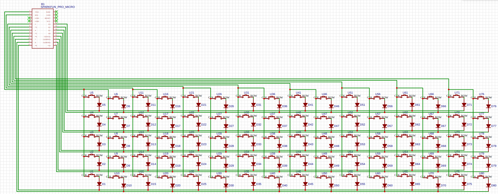
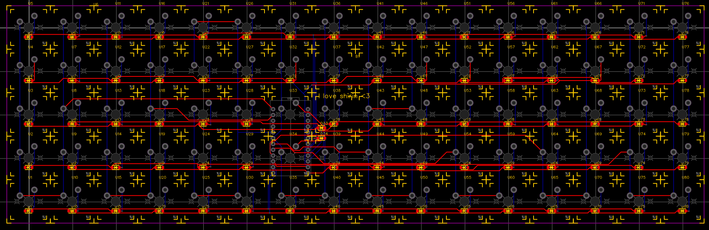
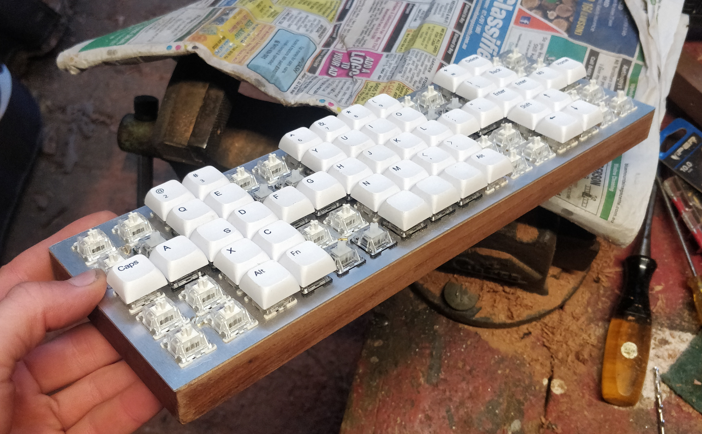
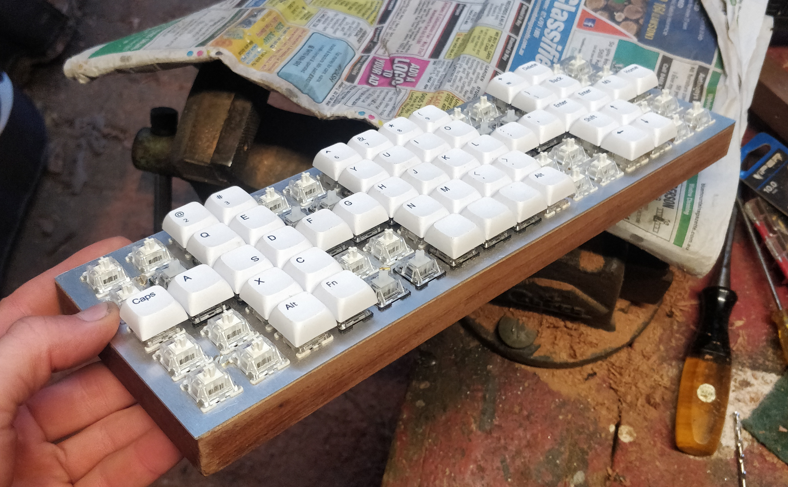
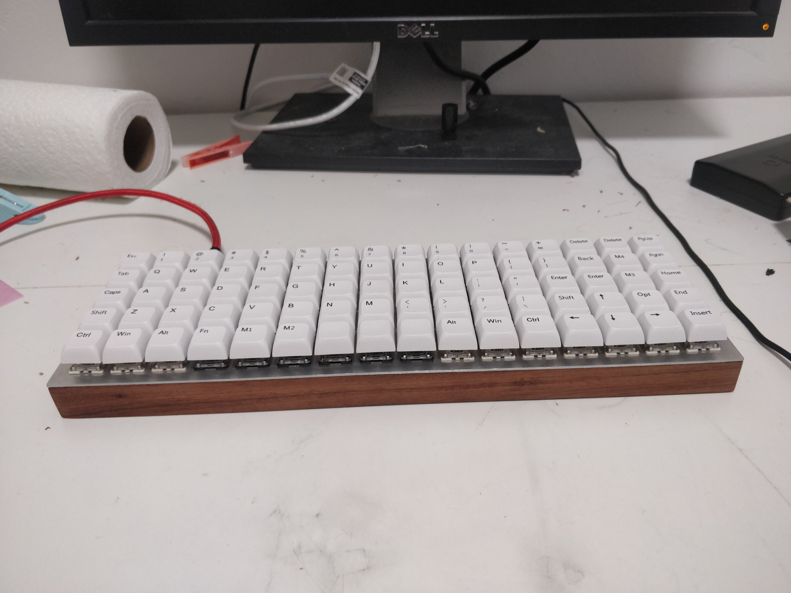

Development and Design
The initial backplate was large and made from mild steel. The "kerf" was too wide, meaning the switches didn't fit into place snugly, leading to slightly rotated keys and an insecure plate.
After some testing the size of the keyboard was too large to be useful. As it needed to be made again due to the poorly fitting, alternative layots were investigated.

After some investigation, a very simple ortholinear layout was more appropriate as it's much easier to buy a set of keys and no stabilisers are necessary.
The design was then lasercut from 1.4mm aluminium using the metal laser cutter at UNSW Kirby Makerspace. This meant the kerf issue could be resolved as several test squares could be cut and tested before production to find the optimal size of hole to fit the switches.
EasyEda makes designing PCBs very easy.
 The patterns of the buttons were put on the wrong side. Not wanting to re-order, an attempt at fixing was made. It turns out this could be fixed without much issue. The diodes were offset esteel_framenough that the switches could be soldered right over the top with the exception of 1 diode, pictured below.
 

A look at the final product. The keyboard can switch between stenography and qwerty using a press of the opt button.
This video shows a demonstration of the final product performing its inbuilt stenography function. Evidently a lot more work is needed to become familiar with it.